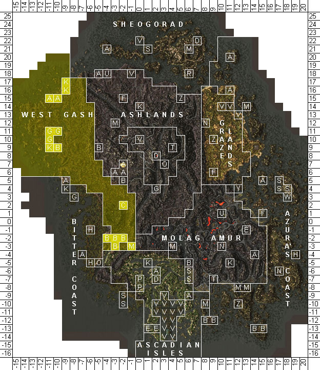
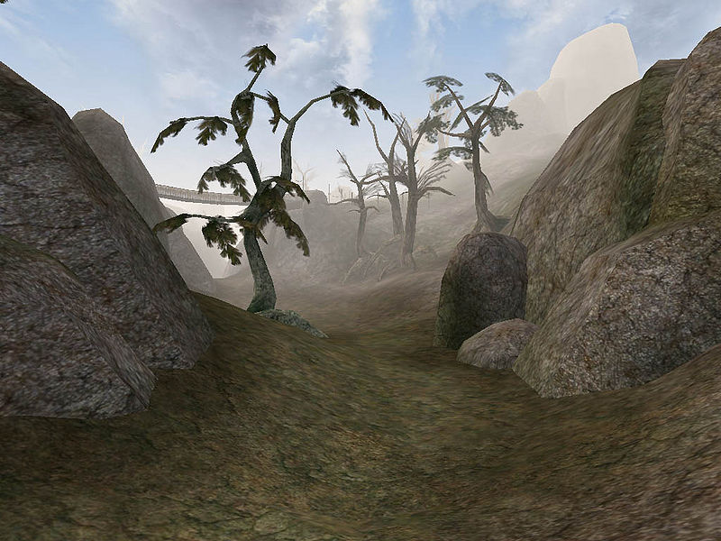
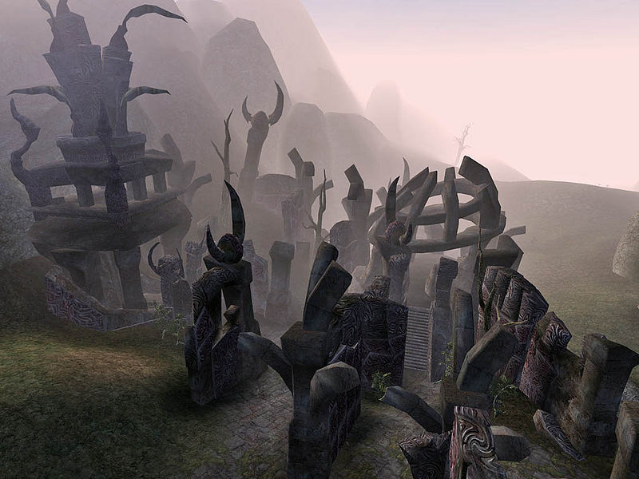
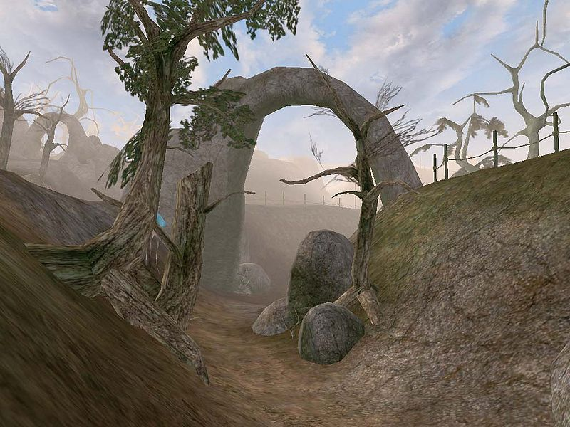

|
 Map of the West Gash |
|
 A typical scene in the Grazelands |
|
 Daedric Ruins dot the landscape |
|
 Ravines and natural arches are common sights |
The western highlands of Vvardenfell are called the West Gash. The region is one of Vvardenfell's largest contiguous areas, stretching from just south of Balmora, the district seat of House Hlaalu, to as far north as Khuul and the shores of the Sea of Ghosts. The West Gash lies between two mountain ranges, west of the Ashlands and east of the Bitter Coast. The terrain of the West Gash is generally rocky scrubland in the south, marked by unique, natural rock bridges inland in the south and on the coast, with sparse forest in the northern area. Major settlements in the West Gash include the fishing villages Ald Velothi and Khuul, the trading village Gnisis, Balmora and Caldera. The Caldera Mining Company has been granted an Imperial monopoly to remove Raw Ebony from the rich deposits here. Caldera has the appearance and flavor of a Western Imperial town, but a Hlaalu Governor. The Imperial Legion garrisons of Fort Moonmoth and Fort Darius round out the Imperial presence. The Gash is mainly under House Redoran control, Athyn Sarethi is the Lord of South Gash, Hlaren Ramoran, Lord of West Gash and Miner Arobar is the Lord of North Gash. Caldera is a new Imperial charter, and the exploration of the Caldera Mine by House Hlaalu is a thorn in the eye of the Redorans. Ash Storms sometimes bring blighted creatures to the region and are a threat to pilgrims and trade caravans alike. The West Gash is dotted with Daedric Shrines, which, although in ruins, attract their share of Orcish worshippers.